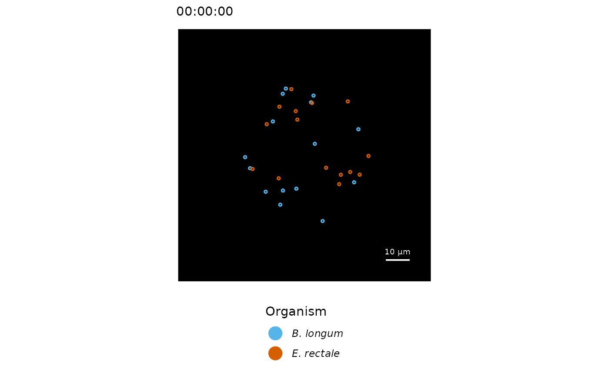

Adds an organism an its genome-scale metabolic network model to the growth simulation object.
Usage
add_organism(
object,
model,
name,
ncells,
coords = NULL,
distribution.method = "random_centroid",
distribution.center = NULL,
distribution.radius = NULL,
cellDiameter = (3 * 1/(4 * pi))^(1/3) * 2,
cellMassInit = 0.28,
cellMassAtDivision = 0.56,
cellShape = "coccus",
vmax = 11,
scavengeDist = cellDiameter * 2.5,
rm.deadends = T,
chemotaxisCompound = NULL,
chemotaxisStrength = 0.01,
chemotaxisHillKA = 0.1,
chemotaxisHillCoef = 1.2,
open.bounds = NULL,
color = NULL
)Arguments
- object
S4-object of type growthSimulation.
- model
The organisms metabolic model of S4-type modelorg
- name
Character for the name of the model, that will also be used for plotting.
- ncells
integer. Number of initial cells to be added to the growth simulation.
- coords
(optional) A two column numerical matrix specifying the coordinates (1st column x, 2nd column y) of the initial cells. If provided, the number of rows should be equal to
ncells. Default: NULL- distribution.method
If `coords` is `NULL`, this parameter specifies the distribution method for initial cells. Default: "random_centroid"
- distribution.center
Numeric vector of length 2, which specifies the coordinates of the centre for the `distribution.method`.
- distribution.radius
double. Spcifies the radius (in \(\mu\)m) in which initial cells are distributed.
- cellDiameter
double. Diameter in \(\mu\)m of initial cells.
- cellMassInit
double. Mass in pg of initial cells. Default is 0.28 pg
- cellMassAtDivision
double. Cell mass at which a cell divides into two daughter cells. Default: 0.56 pg
- cellShape
character. Shape of cells. Currently only "coccus" is supported.
- vmax
double. Maximum velocity of a cell in \(\mu\)m per second.
- scavengeDist
double. Distance in \(\mu\)m a cell can scavenge nutrients from its surrounding/microoenvironment.
- rm.deadends
If TRUE, dead-end metabolites and reactions are removed from the `model`, which reduces the computation time for FBA, but has otherwise no effect on the flux distribution solutions.
- chemotaxisCompound
Character vector of compound IDs, that are signals for directed movement of the organism.
- chemotaxisStrength
Numeric vector that indicates the strength of chemotaxis. Positive value for attraction; Negative for repelling effect. A value of 1 indicates that in case of a maximum gradient (concentration-weighted center in cell's scavenge area is at the edge of the area) the cell moves with its maximum speed (vmax) in the direction of the gradient. Default: 0.01
- chemotaxisHillKA
Numeric vector for K_A value (unit: mM) in Hill equation in chemotactic metabolite sensing. Default: 0.1 mM
- chemotaxisHillCoef
Numeric vector for the Hill coefficient (unitless) in metabolite sensing. Default: 1.2
- open.bounds
Numeric value that is used to reset lower bounds of exchange reactions, which have a current lower bound of 0. See Details.
- color
Color of organism in visualizations.
Value
Object of class growthSimulation.
Details
Genome-scale metabolic models usually come pre-constraint, which means that lower bounds for exchange reactions (= max. uptake rates) are set to represent, both, (a) a specific growth environment and (b) the physiological limit of nutrient uptake. Yet, lower bounds that have a value of 0 might also be utilizable by the organism if the compound is present in the environment. If the option `open.bounds` is used, those 0-lower bounds are replaced with a new lower bound to enable the potential uptake in the agent-based simulation. Please note that the value should by convention be negative; however this package changes the value to it's negative counterpart if a positive value is provided.
The default cell diameter (\((3 * 1 / (4 * pi))^(1/3) * 2\)) is that of a sphere with 1 \(\mu\)m^3 volume.
'chemotaxisHillKA' and 'chemotaxisHillCoef' are metabolite sensing sensitivity parameters, which is modeled as a Hill equation. Default values correspond to numbers estimated by Sourjik and Berg (2001, PNAS) for Escherichia coli.
References
https://bionumbers.hms.harvard.edu/bionumber.aspx?id=100008
http://book.bionumbers.org/how-big-is-an-e-coli-cell-and-what-is-its-mass/
https://bionumbers.hms.harvard.edu/bionumber.aspx?id=115616&ver=0&trm=speed+e.+coli&org=
Victor Sourjik and Howard C. Berg. (2001). Receptor sensitivity in bacterial
chemotaxis. PNAS 99, 123-127.
Examples
# add two bacterial models (Eubacterium rectale, Bifidobacterium longum)
# to the environment; each with 15 initial cells
models <- list()
models[['eure']] <- readRDS(system.file("extdata", "eure.RDS",
package="Eutropia"))
models[['bilo']] <- readRDS(system.file("extdata", "bilo.RDS",
package="Eutropia"))
sim <- init_simulation(cbind(c(-100, -100, 100, 100),
c(-100, 100, 100, -100)),
gridFieldSize = 1.75, gridFieldLayers = 3)
sim <- add_organism(sim, model = models[["eure"]], name = "E. rectale",
ncells = 15, distribution.radius = 30)
sim <- add_organism(sim, model = models[["bilo"]], name = "B. longum",
ncells = 15, distribution.radius = 30)
plot_cells(sim, xlim = c(-50,50), ylim= c(-50,50))
